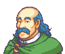

Supportゴンザレス⇔ダヤン
Support Rank C

なあ なあHey, hey.
それ 何だ？What's that?

東方の弓は
めずらしいか？Are eastern bows unusual to you?
これは訓練に使うもので
戦いには向かんが・・・This one's for training, not suited for actual combat, but...
か かしてくれL— let me try it.
うむ よかろう
まずここを引いてみよHmm, very well. First, try drawing it here.
こ こうかL— like this?
ほう すさまじい力よHo, what tremendous strength.
並の男の力では
引くことさえできぬというのにAn ordinary man couldn't even draw it back.
お おれ すごいI— I'm amazing.
うむ
ではそのまま矢をつがえてみよIndeed. Now, try nocking an arrow like that.
？?
ここに 矢を置くのだYou place the arrow here.
ここに やをおく・・・Place the arrow here...
そして 放つAnd then, release it.
そして はな・・・And then, relea—
うがっGuh!
い いかん！N— no good!
しっかりするのだ
ゴンザレス！Stay with me, Gonzalez!
さ ささった・・・I— it's stuck in me...
Support Rank B
どれ 頭を見せてみよNow then, let me see your head.
うむ・・・
治ったようだなHm... Looks like it's healed.
うう・・・Ughh...
おれ もう弓はいいI'm done with bows.
それ その馬なんだ？
毛がへんだHey, what's with that horse? Its fur's weird.
おまえの土地の馬とは
毛色が違っておろうIts coat color is different from the horses in your land, isn't it.
サカは
この馬たちあってのものだSacae exists because of these horses.
騎士たちの騎馬にも
決して引けはとらぬぞThey're in no way inferior to the knights' warhorses.
の のる
おれ のりたい・・・R— ride it, I wanna ride it...
ぎゃあGyaah!
ゴ ゴンザレス！Go— Gonzalez!
馬は 後ろに立つものに
びんかんなのだHorses are sensitive to anyone standing behind them.
安易にまわりこんではならんYou mustn't carelessly go around behind one.

・・・いたい...Ow.
Support Rank A
すまんな ゴンザレスSorry about this, Gonzalez.
お前には
ケガをさせてばかりのようだSeems like I keep injuring you.
いい 特に
気にしていないIt's fine. I'm not particularly bothered.
わびのしるしだ
これを受け取るがいいAs a token of apology, take this.
これ なんだ？What's this?
これは 我らクトラ族の
羽根かざりThis is a feather ornament of our Kutolah clan.
お前のような偉丈夫には
よく似合おうIt should suit a fine, sturdy man like you well.
・・・ありがとう...Thanks.
それから これをやろうAnd then, I'll give you this too.
馬乳酒という
祝い事にのむ うまい酒だIt's called kumis — a delicious liquor drunk at celebrations.
うれしいI'm happy.
おれ のむI'll drink it.
待て待て
そんなに飲んでは・・・Wait, wait, if you drink that much...
う？Hm?
う～～～・・・Ohhh......
ゴンザレス！
しっかりせよ！ 立てるか？Gonzalez! Stay with me! Can you stand?
だから言わんことではない
この酒は並の強さでは・・・That's exactly why I told you — this drink isn't something an ordinary man's tolerance can handle...
う～～～・・・Ohhh......